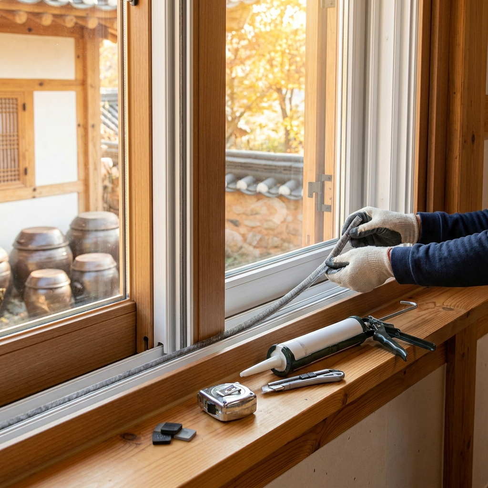
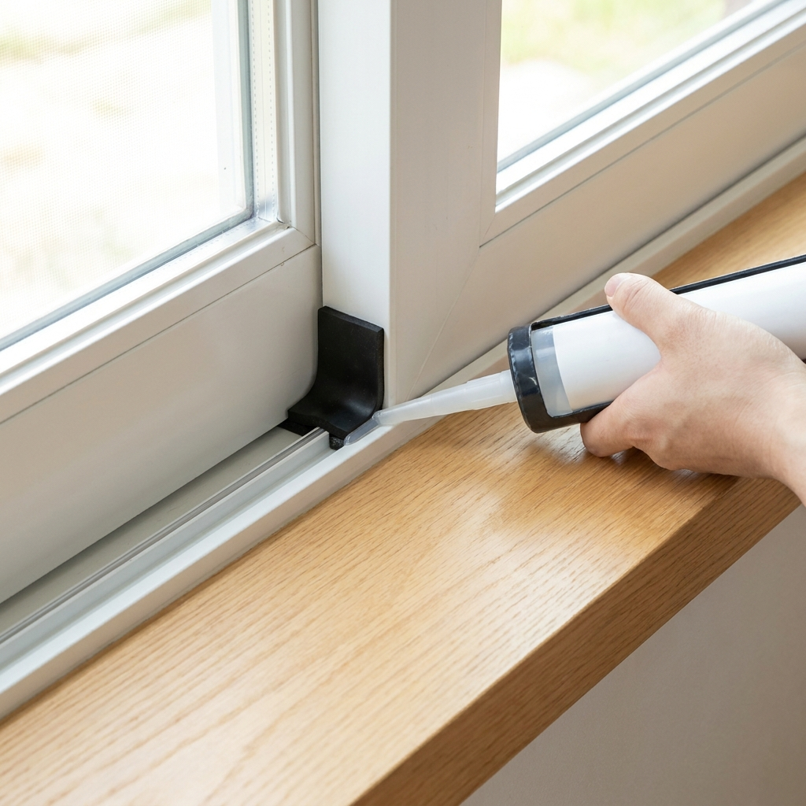

전원주택 창호 틈새 외풍 차단 셀프 시공 방법 — 문풍지 vs 모헤어 vs 실리콘 단열 자재 비교와 단계별 시공 체크리스트
아침저녁으로 찬 바람이 불기 시작하는 10월 환절기는 전원주택 창호의 낡은 모헤어와 틈새를 보수하여 겨울철 난방비를 최대 20~30% 절감하는 최적의 셀프 시공 적기입니다.
단순히 스펀지 문풍지만 덧붙이면 1년 만에 삭아 가루가 날리므로, 샷시 레일 유격에는 발수 모헤어를 끼우고, 창틀 테두리에는 실리콘 코킹을, 레일 겹침 부위에는 고무 풍지판을 결합해야 완벽한 외풍 차단이 완성됩니다.
전문 시공 업체를 부르면 창문당 5만~10만 원이 들지만, 철물점이나 온라인에서 자재를 구매해 직접 작업하면 창당 5천 원 안팎의 예산으로 해결할 수 있습니다.
자재별 장단점 비교표와 초보자도 쉽게 따라 하는 단계별 셀프 시공 체크리스트를 지금 바로 확인해 보세요.

전원주택 창호 레일에 낡은 털을 제거하고 새 고밀도 모헤어 단열재를 셀프 시공하는 모습 / AI 제작 이미지
01 | 전원주택 가을 환절기 창호 외풍 발생 원인과 단열의 중요성
아파트와 달리 사방이 외부 공기에 그대로 노출된 전원주택이나 단독주택은 가을철 찬 바람이 불기 시작하면 실내 체감 온도가 급격히 떨어집니다.
주택 열 손실의 40% 이상이 벽체가 아닌 '창문과 창틀의 미세한 틈새'를 통해 발생한다는 사실을 많은 주택 거주자들이 간과하곤 합니다.
이중창이나 3중 로이유리를 시공했더라도 창호의 틈새를 막아주는 기밀성(氣密性)이 떨어지면 찬바람이 숭숭 들어오는 '외풍(웃바람)'을 피할 수 없습니다.
외풍이 발생하는 가장 주된 원인은 수년간의 자외선 노출로 샷시 레일 사이의 모헤어(털)가 삭아 부스러졌거나, 건물 미세 침하로 창틀 유격이 벌어졌기 때문입니다.
본격적인 영하의 강추위가 닥치기 전인 10월에 창호 기밀 보수를 완료해 두어야 겨우내 보일러 등유나 가스비를 크게 아끼고 따뜻한 겨울을 보낼 수 있습니다.
02 | 외풍 차단 자재별(문풍지 vs 창문 모헤어 vs 방풍비닐 vs 실리콘) 비용 및 수명 비교표
창호 외풍 차단에 쓰이는 대표적인 4가지 자재의 특성과 가성비를 아래 표로 비교 정리했습니다.
| 자재 종류 |
평균 비용 (창 1개 기준) |
수명 및 내구성 |
단열 및 차단 성능 |
시공 난이도 및 특징 |
| 고밀도 발수 모헤어 |
3,000원 ~ 6,000원 |
5년 ~ 7년 (반영구적) |
최상 (바람 소리·먼지 차단) |
보통 (기존 털 제거 후 레일 홈 삽입 또는 부착) |
| 스펀지 / PVC 문풍지 |
1,500원 ~ 3,000원 |
1년 (자외선에 부식) |
보통 (시간 지나면 눌림 발생) |
매우 쉬움 (양면테이프 부착, 제거 시 자국 주의) |
| 투명 방풍비닐 (방풍막) |
4,000원 ~ 8,000원 |
1시즌 (겨울철 한정) |
상 (공기층 형성 단열 우수) |
보통 (창문 개폐 불가, 환기 제한적) |
| 창호 전용 실리콘 코킹 |
2,500원 ~ 4,000원 (실리콘 1통) |
5년 ~ 10년 |
최상 (창틀 고정부 완전 밀폐) |
보통 (코킹건 사용 기술 필요, 가스켓 부위) |
가장 이상적인 조합은 '모헤어로 레일 마찰부 기밀 유지' + '실리콘으로 프레임 틈새 밀폐' + '풍지판으로 코너 구멍 차단'의 3중 방어막입니다.
03 | 열화상 카메라 없이 휴지·라이터로 창문 틈새 바람 찾는 법
시공에 들어가기 전, 창문의 어느 부위에서 외풍이 가장 심하게 유입되는지 정확하게 진단해야 헛수고를 줄일 수 있습니다.
고가의 열화상 측정 장비가 없어도 집에서 흔히 쓰는 도구로 3분 만에 외풍 침투 위치를 찾아낼 수 있습니다.
🕯️ 집에서 바로 하는 외풍 침투 위치 자가진단법
1. 휴지(티슈) 1장 활용법: 얇은 미용 티슈 한 장을 펄럭이게 든 상태로 창틀 테두리와 샷시 겹침 부위를 천천히 따라 이동합니다. 바람이 새어 들어오는 지점에서 티슈가 방 안쪽으로 강하게 펄럭입니다.
2. 스마트폰 손전등 활용법: 밤에 방 안의 불을 끄고 바깥 창문 틈새로 플래시 불빛을 비춥니다. 방 안에서 불빛이 선명하게 새어 보이는 틈이 있다면 그곳이 바로 찬 공기가 통과하는 통로입니다.
3. 창문 흔들림 테스트: 닫힌 창문 손잡이를 잡고 앞뒤로 흔들었을 때 '덜컹덜컹' 소리가 나며 5mm 이상 유격이 발생한다면 모헤어가 완전히 닳아 없어진 상태입니다.
대부분의 바람은 창문이 겹치는 중앙 수직 라인과 레일 하부 양쪽 코너 구멍을 통해 쏟아져 들어옵니다.
04 | 샷시 레일 틈새용 창문 모헤어 셀프 교체 순서와 규격 측정법
모헤어(Mohair)는 샷시 창짝 테두리에 심어져 있는 벨벳 브러시 형태의 털로, 창호 기밀성의 80%를 책임집니다.
창문을 떼어내지 않고도 손쉽게 부착할 수 있는 스티커형(접착형) 고밀도 모헤어를 사용하면 누구나 30분 만에 교체할 수 있습니다.
✂️ 모헤어 셀프 교체 4단계 순서
1. 낡은 모헤어 규격 실측: 버니어캘리퍼스나 자로 기존 모헤어의 베이스 폭(보통 6mm 안팎)과 털 길이(7mm, 9mm, 12mm)를 측정합니다. 유격이 크다면 기존보다 2mm 정도 더 긴 규격을 선택합니다.
2. 기존 삭은 모헤어 긁어내기: 일자 드라이버나 헤라를 이용해 삭아 굳은 털을 깨끗이 긁어내고 청소기로 가루를 흡입합니다.
3. 탈지 및 이물질 닦기: 알코올 티슈나 물티슈로 부착면의 기름때와 먼지를 완벽하게 닦아낸 후 완전히 건조합니다.
4. 신규 모헤어 압착 부착: 뒷면 이형지를 조금씩 벗겨내며 위에서 아래로 팽팽하게 당기면서 꾹꾹 눌러 붙여줍니다.
털 길이를 너무 긴 것으로 잘못 구매하면 창문이 뻑뻑해져 닫히지 않으므로, 창틀 레일 깊이를 사전에 정확히 측정하는 것이 핵심입니다.

창호 레일 코너의 바람구멍을 차단하는 고무 풍지판 설치와 실리콘 마감 시공 / AI 제작 이미지
05 | 창틀 하부 및 유리 테두리 실리콘 재코킹 셀프 시공 5단계
유리와 창틀 샷시 사이의 실리콘이 들뜨거나 곰팡이가 슬어 갈라졌다면 찬 바람뿐만 아니라 빗물 누수의 원인이 됩니다.
실리콘 코킹은 '비초산계(무취) 건축용 창호 실리콘'과 마스킹 테이프만 있으면 전문가 부럽지 않게 매끄럽게 시공할 수 있습니다.
먼저 커터칼로 기존 노후 실리콘을 완전히 도려낸 후 틈새 먼지를 깨끗이 청소합니다.
실리콘이 묻지 않아야 할 양쪽에 마스킹 테이프를 일직선으로 붙인 뒤, 노즐을 45도 각도로 잘라 틈새에 일정한 힘으로 쏴줍니다.
실리콘 헤라(주걱)에 비눗물을 살짝 묻혀 표면을 쓱 긁어 평평하게 다듬고, 실리콘이 마르기 전 테이프를 즉시 떼어내면 완벽한 라인이 완성됩니다.
06 | 현관문 하부 문풍지와 풍지판(창문 틈막이) 설치 체크리스트
창문 외풍을 모두 막았더라도 현관문과 창틀 하부 코너를 놓치면 외풍 차단 효과가 반감됩니다.
🚪 놓치기 쉬운 외풍 사각지대 차단 체크리스트
1. 창문 상·하부 레일 풍지판 설치: 슬라이딩 창문이 교차하는 레일 구멍은 모헤어로도 막히지 않는 빈 공간입니다. 개당 1,000원 안팎의 고무 스펀지 풍지판을 레일 위아래에 꼭 끼워주세요.
2. 현관문 고무 가스켓 복원: 현관문 테두리 고무 패킹이 찢어졌거나 경화되었다면 현관문 전용 D형 고무 패킹으로 전면 교체합니다.
3. 현관문 도어 바텀(하부 차단기) 장착: 현관문 아래 1~2cm 벌어진 바닥 틈으로 황소바람이 들이칩니다. 빗자루형 브러시나 실리콘 문틈막이를 부착하여 외풍을 원천 봉쇄합니다.
4. 우편함 및 인터폰 배선 구멍 밀폐: 현관문에 달린 구형 투입구형 우편함 틈새는 폼 테이프로 막아 열 손실을 예방합니다.
이 네 가지만 꼼꼼히 보완해도 복도나 마당에서 불어오는 찬 공기가 거실로 유입되는 것을 완벽하게 차단할 수 있습니다.
07 | 셀프 시공 시 자주 저지르는 치명적 실수와 창문 안 닫힘 방지 팁
초보자분들이 셀프 시공 중 가장 흔하게 저지르는 실수는 "무조건 두껍고 빽빽한 자재가 좋다"고 착각하는 것입니다.
창문 유격은 3mm인데 10mm짜리 두꺼운 문풍지나 모헤어를 억지로 붙이면 창문 손잡이가 잠기지 않거나 레일이 이탈하는 사고가 발생합니다.
또한 유분이 남아있는 먼지투성이 창틀에 테이프를 바로 붙이면 보름도 안 되어 들뜨고 떨어지는 낭패를 봅니다.
반드시 접착 증진제(프라이머)를 바르거나 알코올로 기름기를 완벽히 제거한 후 시공하셔야 수년간 끄떡없이 유지됩니다.
08 | 창호 외풍 차단 후 전원주택 난방비 절감 효과 계산
전원주택에서 창호 외풍 차단 시공을 완료했을 때 얻을 수 있는 경제적 효과는 생각보다 엄청납니다.
한국에너지공단 실측 자료에 따르면, 창호 틈새바람을 완벽히 차단하는 것만으로도 실내 온도가 평균 2~3도 상승하는 효과가 있습니다.
실내 온도가 1도 올라갈 때마다 겨울철 난방 에너지는 약 7%씩 절감되므로, 전체적으로 월 15~20% 이상의 난방비 절약이 가능합니다.
등유 보일러를 쓰는 30평형 전원주택 기준 한 달 난방비가 40만 원 나온다면 매달 약 6만~8만 원, 한겨울 4개월 동안 25만~30만 원 상당의 연료비를 아끼는 셈입니다.
단돈 2만~3만 원의 자재비 투자로 그해 겨울 수십만 원의 난방비를 돌려받는 가장 확실한 재테크 시공입니다.
09 | 환절기 창호 점검 전 필수 공구 준비물과 작업 안전 수칙
작업을 시작하기 전 준비해야 할 필수 공구와 주의사항입니다.
준비물로는 커터칼, 스크래퍼(헤라), 줄자, 알코올 소독 티슈, 실리콘 건, 마스킹 테이프, 작업용 장갑이 필요합니다.
전원주택 2층 창문이나 높은 통창을 작업할 때는 무리하게 몸을 밖으로 내밀지 마시고 반드시 안전 발판을 확보하거나 실내에서 작업 가능한 구간 위주로 진행하셔야 합니다.
날씨가 영하로 떨어지면 접착 테이프의 접착력이 급격히 떨어지고 실리콘 경화가 불량해지므로, 낮 기온이 15도 안팎인 10월 맑은 날 낮 시간대에 작업을 완료하시길 강력히 권장합니다.
#전원주택외풍차단
#창문문풍지셀프
#샷시모헤어교체
#창호단열시공
#창문틈막이풍지판
#전원주택겨울준비
#난방비절약방법
#창틀실리콘코킹
#외풍차단비교
#셀프인테리어